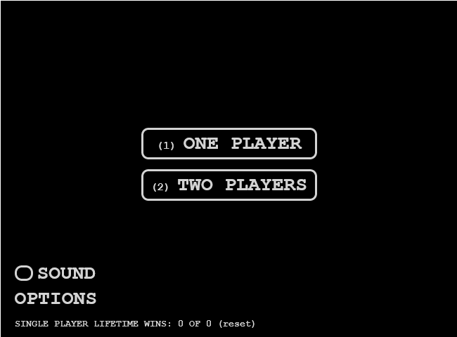

Pong Game
Welcome to PongGame.org, In this site, you can find many free versions of the game, one of the first video games ever created. In the game below, use the mouse or keyboard to control the paddle, Press P to pause the game, or ESC to go back to the main menu.
You can find the old flash game here
Once you're done playing Pong, there are some other game you can play online, such as Spider Solitaire and Freecell
About Pong
Pong is one of the first computer games that ever created, this simple "tennis like" game features two paddles and a ball,
the goal is to defeat your opponent by being the first one to gain10 point, a player gets a point once the opponent misses a ball.
The game can be played with two human players, or one player against a computer controlled paddle.
The game was originally developed by Allan Alcorn and released in 1972 by Atari corporations.
Soon, Pong became a huge success, and became the first commercially successful game, on 1975, Atari release a home edition of Pong
(the first version was played on Arcade machines) which sold 150,000 units.
Today, the Pong Game is considered to be the game which started the video games industry,
as it proved that the video games market can produce significant revenues.
Nolan Bushnell founded Atari at 1972 in order to create games and ideas and license them to other companies for mass production.
Pong was actually a training exercise for one of Atari's employees - Allan Alcorn, once it was finished,
Nolan made few adjustments in order to make the game more interesting (like changing the ball's return angle) and added simple sound effects.
The first Pong Arcade machine was installed on a local bar, and it was so successful that Atari decided to produce and sell the game by themselves,
rather then licensing it to other companies. In 1973 the company finally got a line of credit from Wells Fargo and started an assembly line,
by the end of the year, Pong arcade machines were shipped to location all over the U.S. as well as to other countries.
Similar to other famous games such as Pacman and Tetris, Pong became one of the symbols of computer gaming.
Atari sold more then 35000 Pong machines, this figure is only about one third of the total number of Pong machines that were sold globally, since many Pong clones appeared shortly after the debut of the original Atari Pong game. The way Atari chose to compete with the Pong Game clones was to produce more innovative games such as "Double Pong" which was a pong game with four players, two in every side and a bigger screen.
Contact Us
While using this site, you must agree to PongGame.org Terms of use Policy | Privacy Policy